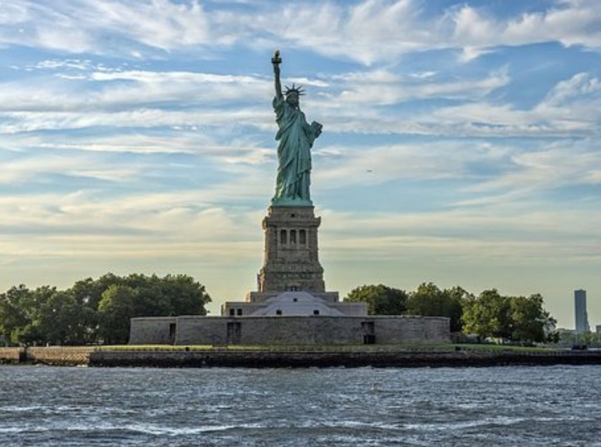
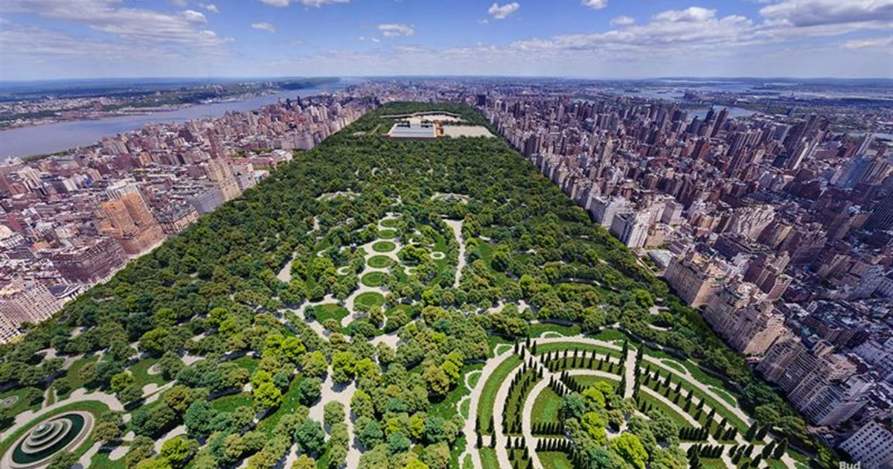
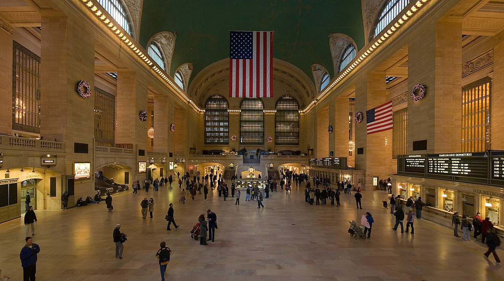
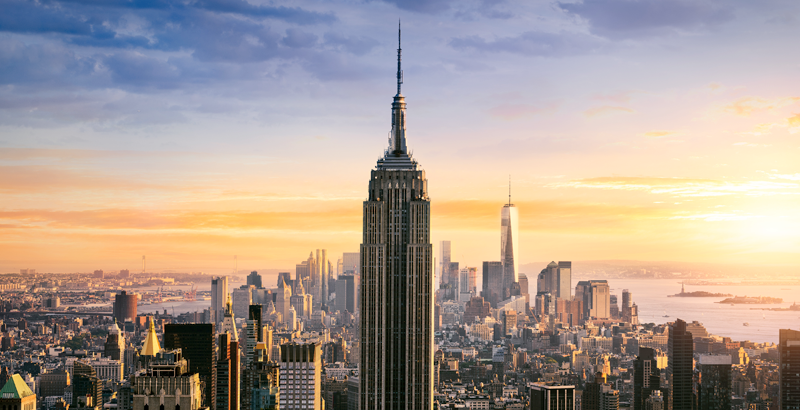
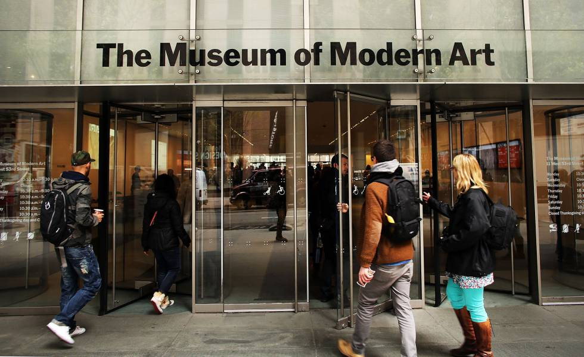
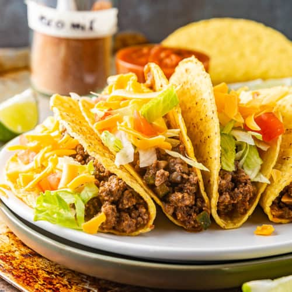

¿Qué hacer en Nueva York?
1.Estatua de la libertad

La Estatua de la Libertad es una de las esculturas más famosas del mundo. La altura de la estatua es de 93 metros. Si está abierta al público, puede subir los 192 escalones hasta la parte superior del pedestal, o 365 escalones hasta la corona. Hay varias maneras de ver la Estatua de la Libertad.
Existe un ferry gratuito que conecta Manhattan con Staten Island y sale de la parte baja de Manhattan desde la terminal Whitehall. El viaje dura 30 minutos en un solo sentido y ofrece vistas impresionantes de la Estatua de la Libertad, la parte baja de Manhattan, el Puente de Brooklyn y el Puente Verrazano. Si desea conocer mejor la estatua, así como visitar las Islas de la Libertad y del Ellis, puede comprar boletos en línea ($21) para el viaje en barco a la Isla de la Libertad.
Entrada basica:
- Adulto: $23,5
- Niños (4-12 años): $12
- Senior (+62 años): $18
Entrada + pedestal:
- Adulto: $23,5
- Niños (4-12 años): $12
- Senior (+62 años): $18
Entrada + subir a la corona:
- Adulto: $26,5
- Niños (4-12 años): $15
- Senior (+62 años): $21
2.Central Park

Central Park es el parque urbano más grande de Nueva York y uno de los más grandes el mundo. Mide más de 4 kilómetros de largo y 800 metros de ancho.
En las 340 hectáreas que ocupa Central Park encontraréis praderas, lagos artificiales, cascadas y zonas que parecen un auténtico bosque. Dentro del propio parque también se encuentra el Zoo de Central Park y otras atracciones. El parque abre todos los días del año de 6 de la mañana a 1 de la madrugada. Solo cierra de noche.
Aunque para una primera visita te recomendamos recorrer el parque a pie (en bici no se llega a todos los lugares), recorrer Central Park en bicicleta también es una opción genial. El terreno es bastante llano y podrás llegar más lejos que a pie, pero tendrás que adaptarte a las normas del parque.
Cómo llegar:
Las líneas de Metro A, B y C circulan por el oeste del parque, la línea 2 lo cruza al norte y las líneas N, Q, y R al sur.
3.Estacion Grand Central

Inaugurada en febrero de 1913 y reformada en 1998, Grand Central Terminal es una de las joyas arquitectónicas de Nueva York. Es un lugar que ha conseguido sobrevivir conservando su estilo durante más de un siglo.
Si bien más de 100.000 personas utilizan esta estación a diario, este número queda diezmado por la cantidad de turistas que entran a comprar en sus tiendas, comer en sus restaurantes o, simplemente, hacer fotografías del edificio.
La estación está abierta diariamente desde 5:30 am hasta 2 am
Cómo llegar:
Dirección: 89 East Calle 42 (altura Park Avenue).
Hasta la estación llegan las líneas de metro 4, 5, 6, 7 y S. También llegan los trenes de Metro North (líneas de Harlem, Hudson y New Haven).
4.Empire State

Con 102 plantas y una altura de 381 metros, el Empire State Building ha sido el edificio más alto del mundo desde 1931 hasta 1972. A nadie se le escapa que el Empire State Building es el rascacielos más famoso de Nueva York.
Entrada:
- Adulto: $38
- Niños (4-12 años): $32
- Senior (+62 años): $36
Cómo llegar:
Dirección: 5ª Avenida entre las Calles 33 y 34.
Metro: 34th Street/Penn Station (líneas 1, 2, 3, A, C y E) o 34th St - Avenue of the Americas (líneas B, D, F, N, Q y R).
Autobús: líneas M2, M3, M4 M5, M16 y M34.
5.Moma

El MoMa reúne la colección de arte moderno y contemporáneo más importante del mundo. Son más de 100 mil piezas en exhibición permanente.Este museo es uno de los más grandes del mundo y alberga obras de Pablo Picasso, Jackson Pollock y Andy Warhol, por nombrar a unos pocos.
Entrada:
- Adulto: $25
- Estudiantes: $14
- Senior (+62 años): $18
- Menores de 16 años libre
- Viernes de 4pm a 8pm entrada gratis!
Cómo llegar:
Dirección: 11 West calle 53, entre 5ta y 6ta Avenida.
Metro: Linea E y V. Estación Fifth Ave-53 St.
¿Dónde comer en NYC?
Pizzas

- Di Fara: Domenico DeMarco elabora las pizzas de este lugar —considerado un referente en la ciudad— con ingredientes traídos de Italia en su mayoría. Venir aquí es un ejercicio de paciencia, pues además de que el local queda algo fuera de camino, las filas suelen ser largas. El precio también es relativamente alto (30 dólares por una pizza de queso), pero la espera y el costo valen la pena.
- Joe's Pizza: Esta pizzeria es sinónimo de pizza neoyorkina: masa delgada, salsa de tomate con el nivel del dulzor ideal y mucho queso mozzarella. El local original está en Carmine Street, pero cuenta con dos sucursales más, una en Manhattan y otra en Brooklyn.
- Pizza Loves Emily: Sus pizzas rectangulares al estilo Detroit son como una mezcla entre la siciliana y la típica deep dish de Chicago, pero también se pueden ordenar redondas y de masa más delgada.
- Una Pizza Napoletana: La filosofía de su dueño, Anthony Mangieri, es parecida a la japonesa: hacer lo mismo cada vez mejor. Como su nombre lo indica, el restaurante sirve pizza napolitana con bordes dorados, crocantes y un interior suave.
Tacos

- Los Tacos No.1: Ir al Chelsea Market es hacer parada obligatoria para unos tacos de “adobada” y un vaso de tamarindo en este rinconcito de México.
- La esquina: Un deli al estilo americano por fuera, una cueva de la gastronomía mexicana por dentro. Decoración aderezada con el look retro de los años 80.
- Otto’s Tacos: Opción económica y variada. Las tortillas son caseras y tienes seis tipos de proteínas como relleno, desde camarones con crema serrano hasta carnitas hechas a las brasas y marinadas en cerveza.
- Casa Enrique: Casa Enrique es un restaurante pequeño, color blanco con un ambiente moderno y tradicionales tacos. Su cocinero, Cosme Aguilar, es oriundo de Chiapas, México y adhiere a recetas familiares de lujo nada, ejercicio de austeridad a la hora de guarniciones. Carne cocinada a fuego lento y lengua de vaca meltingly suave cubiertos con cebolla y cilantro y ubicados en doble tortilla.
Cafeterias
- Café Grumpy: Café Grumpy es el lugar al que ir a por una taza de café recién hecho. Empezó siendo una sola cafetería en Meserole Avenue y Diamond Street en Greenpoint, Brooklyn, pero ahora hay cuatro en la ciudad. Al mismo tiempo, la tienda Greenpoint se ha hecho muy popular debido a su aparición en la serie de televisión Girls.
- La Colombe: Tiene sus raíces en Seattle, al igual que Starbucks, el concepto de cafeterías exportado de EE.UU. En la cafetería de SoHo en Lafayette y Prince Street preparan unos excelentes cappuccinos y espressos. Además ofrecen deliciosos dulces como el croissant de almendras para acompañar el café.
- Think: Think valora mucho el comercio justo del café y se toma la molestia de viajar a la fuente de la que proviene el café para construir una relación con cada granjero. Tanto el americano como el chocolate caliente son absolutamente deliciosos. También hay una cafetería Think dentro de la librería de la Univeridad de Nueva York (NYU) en Mercer Street y 3rd Street.
- Ninth Street Espresso: Ninth Street Espresso comenzó con una sola cafetería en 9th Street y Avenue C en The East Village hace ahora una década. Su decoración minimalista permite una gran cantidad de espacio para sentarse y disfrutar de la bebida. La espuma de sus cappuccinos es simplemente la perfección y su latte art, es algo que no puede perderse.
Pastelerias
- Magnolia Bakery: Si hay una pastelería famosa en Nueva York es Magnolia Bakery, popularmente reconocida por aparecer varias veces en la archiconocida serie Sex and The City. Su dulce más famoso, los cupcakes, por los que la gente hace interminables filas. Además de sus pequeños postres, en Magnolia Bakery encontrarás una gran variedad de tortas, galletas, pies, mini cheesecakes y muchos otros deliciosos postres.
- Carlo’s Bakery: Mundialmente conocida por el programa de televisión Cake Boss, la pastelería dirigida por Buddy Valastro es otro de los lugares que no te puedes perder en Nueva York. Carlo’s Bakery es una pastelería de origen italiano y muchos de los postres que encuentras allí son totalmente inspirados en la repostería del país de la bota.
- Dough: Un lugar para calmar el antojo y en donde repetir no es ningún pecado. La especialidad del lugar, las donuts caseras, esponjosas, de múltiples sabores e infinidad de colores, algunas de sus deliciosos donuts son de coco, chocolate, glaseada, frambuesa, mora, dulce de leche, chocolate, cinnamon, almendras y limón.
- Levain Bakery: Es una pastelería especializada en galletas, allí encontrarás galletas de todos los colores, sabores, es decir, un lugar que satisface todos los gustos.


Como moverme por Nueva York
Subterráneo - Metro
Para moverte en metro por Nueva York, es casi imprescindible que compres una tarjeta MetroCard, el abono de transporte de la ciudad.
El metro de Nueva York tiene 26 líneas que circulan por el subsuelo de la ciudad, pero también por líneas elevadas en el exterior.
Las líneas llevan por nombre un número o una letra: por ejemplo, la línea 7 o la línea N. Además, cada línea tiene un color, pero hay varias líneas que comparten el mismo: por ejemplo, las líneas N, Q y R son todas de color amarillo, y las líneas 1, 2, 3 son de color rojo.
Link al mapa del metro
Colectivo
Los autobuses de Nueva York pueden no ser la mejor opción de transporte, por los atascos habituales. Sin embargo son eficientes, cómodos, y cubren toda la ciudad, incluyendo áreas que el metro no cubre completamente, como la conexión Este-Oeste (crosstown).
Con alrededor de 6.000 vehículos, 236 rutas y más de 16.000 paradas, la de Nueva York es la red de autobuses más grande del mundo.
Los autobuses son de color azul y blanco y en el frente tienen un cartel con la línea y el recorrido. Las paradas están en las esquinas e indicadas con una señal en los mismos colores. En algunas hay carteles con las rutas y los horarios de cada autobús que se detiene allí.
Las líneas de autobús llevan la letra de su distrito delante del número: (M) Manhattan, (B) Brooklyn, (Q) Queens, (Bx) Bronx y (S) Staten Island.
Link al mapa de red de colectivos
Auto o Taxi
Los taxis son uno de los iconos de la ciudad de Nueva York. Tanto los amarillos (los famosos "yellow cabs") como los verdes (boro taxis), ya son parte del panorama. Y también son protagonistas de muchos de los atascos de tránsito (ni se te ocurra tomar un taxi en hora punta). Sin embargo, pueden ser una buena alternativa para moverte de noche por Manhattan.
Bicicleta
La bicicleta es un medio de transporte que muchos neoyorkinos utilizan para moverse por Manhattan. En esta zona hay 40 kilómetros de carriles especiales para vehículos sin motor, y hay carril bici en los 5 puentes más importantes para salir de Manhattan. También hay senderos específicos en los parques.
En toda la ciudad encontrarás sitios para alquilar bicicleta. Debes tener más de 18 años, presentar documentos y depositar una garantía en efectivo o tarjeta de crédito.
Link al mapa de ciclovias